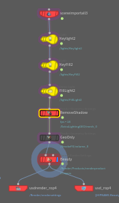
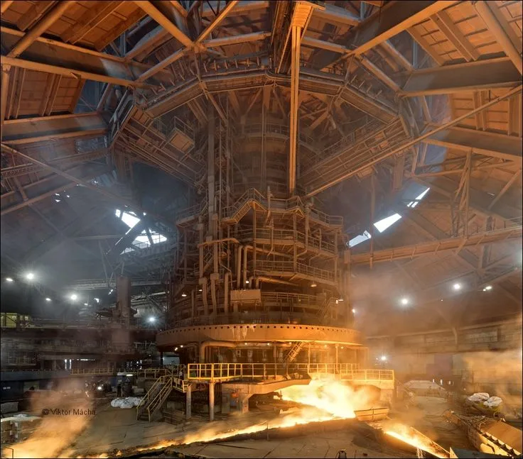

Week5
Team Member
Feb 8
Bomin Kim (Fx)
Caleb Stovall (3D/2D)
Mojie Tang (Fx)
Sydney Relkin (Comp)
Yiqi Zheng (Fx)
SCAD X HARBOR - Week 5
Hello, this is my forth week of the Scad x Harbor blog!
Feedback From Mentors:
Vi:
-
Awesome to see you listened
-
Shot 1: the environment in background is dark/composition
-
Shot 2: Is it needed to add steam?
Hailey:
- Remove shot2, it's the same with shot3
- shot3 - defocus background, atmosphere smoke
- shot6 - title needs to pull out more
Kyle:pam
- Pan now 3D/Paralax
- Not crazy, slow subtle camera move
- Combine shot 2 and 3, it is cool from top down, and have camera orbit around the pouring
- shot3 - focus on what's important/push back what isn't
- shot5 - dof/background may blue/deep compositing bubbles
- shot6 - too tight - perfect it
Billy:
- Background out of focus
- Don't render with depth of field
Joleen:
-
shot 1 top down? Connect the flame to the melting
After our discussion, we decided to combine shots 2 and 3 into a single shot with movement. The camera moves downward and circles around the pouring molten platinum. For shot 2, I also added steam and atmospheric smoke in the background to enhance the factory environment. This is what the final looks like; I also need to adjust the environment to smoke in the following week.
Render
I have had several tests of different viscosities of molten platinum and tried to find the most suitable one. For my latest test for the shot, I chose viscosity 40.
Viscosity: 20
Viscosity: 30
Viscosity: 20
Viscosity: 40
Viscosity: 100
Separated Layers:
Caleb separated the smoke layer and beauty layer in Karma. Following the instructions from the forum post, I followed the steps and achieved the result. Use the Render Geometry Settings node, select invisible objects in Primitives, and choose 'Invisible to Primary Rays (Phantom)' to exclude the unselected objects.
Link for forum post: https://www.sidefx.com/forum/topic/84982/?page=1#post-367709


Environment Smoke:
Based on Professor Fowler's suggestion, I tested two different smoke solvers in Houdini: Smoke Object Sparse and Smoke Object, to compare their speed and smoke effects. The results show that Smoke Object Sparse is much faster than Smoke Object.


Smoke object
Smoke object Sparse
I also tested different environment smoke effects and added dust to create an immersive atmosphere for the pouring scene.
Reference:



This is what the final flipbook looks like.
This is what the final render looks like.